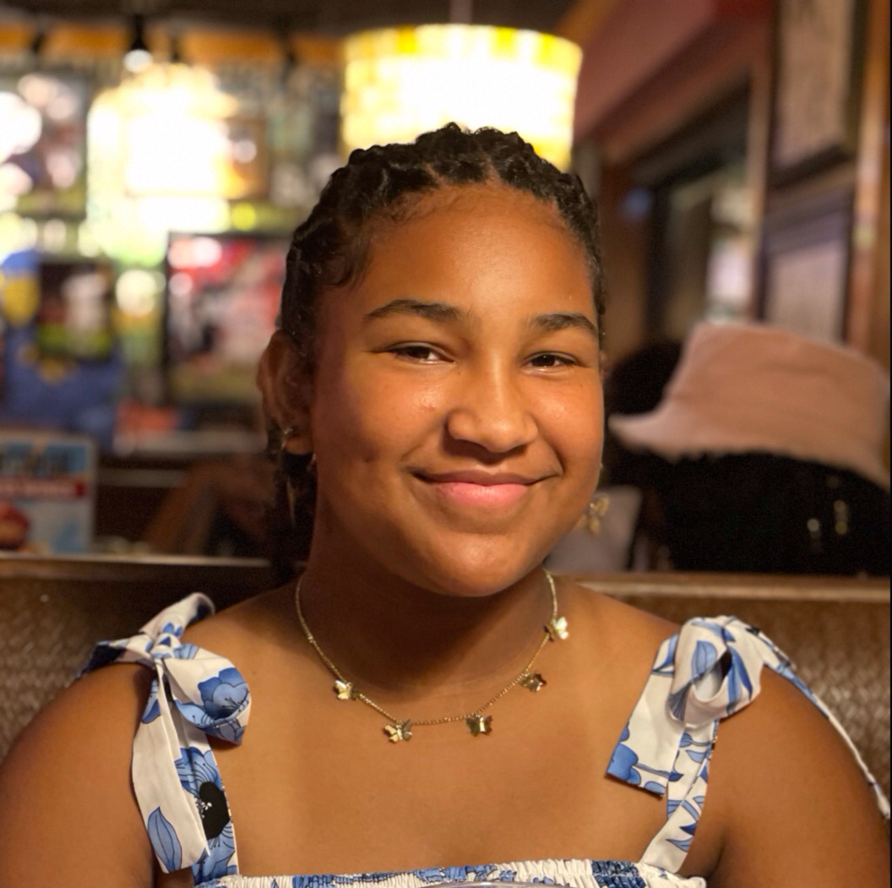
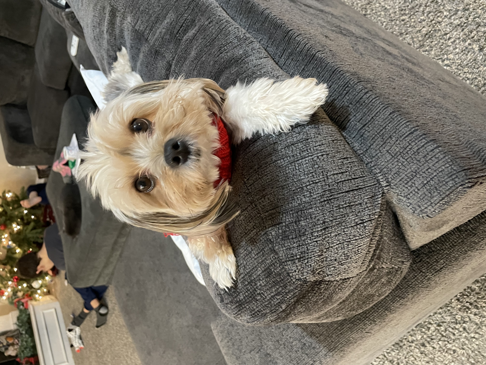
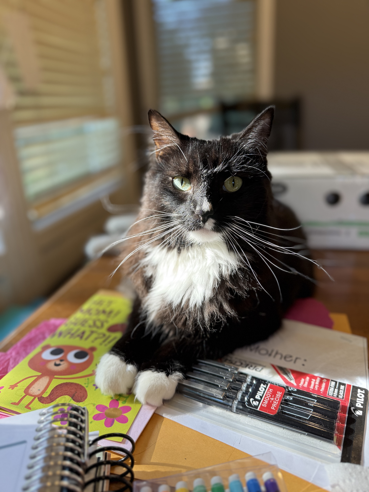
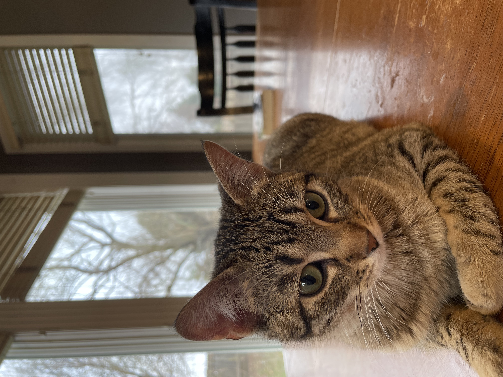
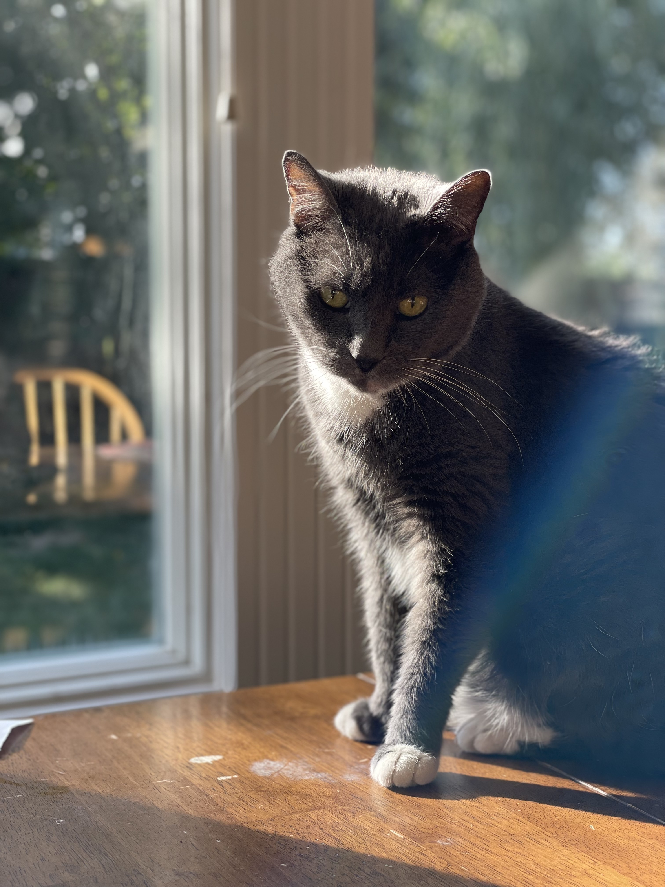
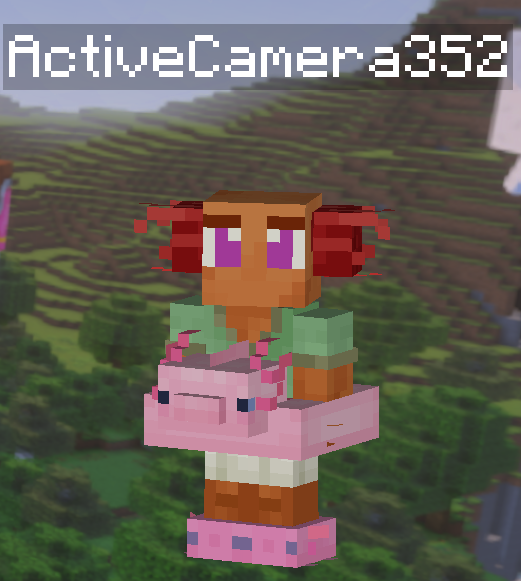

About Me

I was originally going to be named Olivia Grace Werner. But on the way to meet her new baby girl at the Holiday Inn in Lawrence, my mom was listening to the song Ava Maria. At four days old when she held
me in her arms for the first time my mom knew I was meant to be Ava Marie Carmella Werner. I was the fourth girl to be adopted and fifth child in my family of 11 children.
Education
I am a senior in high school and play soccer for a private homeschool highschool called Christ Preparatory Academy. I have been homeschooled since Kindergarten. I love the freedom of getting to study the things I am interested in.
My plan is to continue at JCCC and finish a couple of certifications in Web Development and Software Design. Then I plan to go to MNU and pursue a four year degree in Biology.
Pets
- This is my dog
Bailey Grace. - 
- This is our family
cat Kode. - 
- This is my sisters
cat Millie - 
- This is my moms cat
Phoede - 
2007-2024
Minecraft

- GamerTag: ActiveCamera352.
- Minecraft is my favorite video game It is so relaxing and fun.
- My favorite game mode is survival.
- I love farming and taking care of animals.